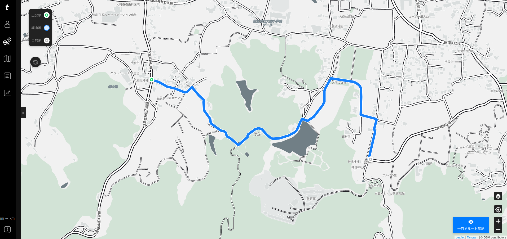

八重垣神社チャレンジ再び（八雲立つ風土記の丘 遺跡めぐり 3）

朝方の雨も上がって晴れ間が出てきたので，今日も自転車でお出かけすることにした。 今回の目標は以下の通り。
八重垣神社チャレンジ再び
昨年のチャレンジのときはもの凄くしんどかったが，あれから1年近く経って再チャレンジしてみた。 あいかわらず矢の原の上り坂がしんどいのだが，今年はフロントリングをインナーに落としたらだいぶ楽に登れるようになった。 よしよし。 多少なりとも進歩しているな。
というわけで意宇六社1 のひとつ，八重垣神社に到着。 折角なのでお参りしておく。
八重垣神社 → 神魂神社
折角なのでこのまま神魂神社にも行ってみよう。 サイクルコンピュータのナビにルートを設定させたらこんな感じになった。

{kind=link}
trimm Center
分かりにくいけど，これ，地図にない道を通ろうとしてるのよ。 しかも舗装されてないし。 「こんな道，通れるか！」と思ったが，とりあえず行けるだけ行ってみることにした。 無理なら八重垣神社まで後戻りすればいいし。
あっ，看板がある。
マジか。 つまりこれって神魂神社までの正規ルートなのか。
どうやら，このルートは八重垣神社から神魂神社までのハイキングコースになっているらしい2。 途中にこんな案内板があった。
この看板の近くに荒神谷・後谷古墳群があるぽいが
自転車で入り込むのは無理そうなのでそのままスルーした。 しばらく行くと，また看板を発見。
あれ？ この辺って子どもの頃に通ったことある。 いや，厳密には違うかもしれないけど，こういう鬱蒼とした道を通って神魂神社まで行った覚えがある。
というわけで，以降は Google Maps にない道ではあるが，確信を持って進むことにした。 といってもスポーツサイクルで行くならグラベル寄りの構成じゃないとキツいかも。
おっ，また看板がある。 大石横穴群？
ちょっと入ってみたかったが上がり口がわからない。 こちらもスルーした。 そのうち歩いて行ってみたい。
神魂神社
というわけで，無事に神魂神社に到着。
折角なので，ここもお参りしておこう。 おっ，本殿の扉が開いてるな。
遠目ではあるが，ええもん見れた。
鼕行列
では，図書館に行こうか。 途中で昼飯を貪り食う。
インディアンスパゲッティ？ あぁ，カレーを絡めてるからか。 旨かったっス。 あんまり辛くなかったけど。
図書館前に着いたら，ドンドンと鼕の音が聞こえるのね。 そういや今日って鼕行列だったわ。 ちょっと見物してくか。
おー。 餅撒きしてはる。
まぁ，鼕行列自体は昨年楽しんだので，今回はこのくらいにして図書館に行くか。 …本当は学習室が使いたかったのだが，学生さんでいっぱいだったので，おぢさんは遠慮することにした。 頑張れよー。
休憩エリアで自前で持ってきた本を読みつつ，鼕行列による交通規制が解除されるタイミングまで待って松江駅方面に移動。 お茶しながら読書。
先日購入した『ハッキング思考』の最初の方をパラパラと読んでいたのだが，これちゃんとメモしながら読まないと駄目だわ。 ちゃんと準備して読み直そう。
今日の宍道湖
日没前になったので宍道湖に移動。 おー。天使の階段（angel’s Stairway）だ。
こりゃあ，期待できるかな。
んー。 かろうじて撮れた。 次の機会に期待しませう。
参考

- ハッキング思考 強者はいかにしてルールを歪めるのか、それを正すにはどうしたらいいのか
- ブルース・シュナイアー (著), 高橋 聡 (翻訳)
- 日経BP 2023-10-12
- 単行本
- 4296001574 (ASIN), 9784296001576 (EAN), 4296001574 (ISBN)
- 評価
「AI時代にルールを味方につけるには、「正しいハッキングの考え方」が必要だ」（帯の言葉より）

- trimm ROLLIN サイクルコンピュータ GPS 自転車 速度計 ワイヤレス ナビゲーション ANT+センサー対応 Bluetooth 心拍数 高度計 2.7インチ スピードセンサー(device only)
- Trimm
- B0BLNFPWTQ (ASIN), 8809748020286 (EAN)
- 評価
韓国企業だけどモノは made in Chaina って書いてあった。ナビ機能付きで2万円以下というのは安い。スマホアプリと連携させて操作する。モノクロ液晶だがバッテリ消費は少なめ。各種センサーやスマートウォッチと連携可能。

- GARMIN(ガーミン) vívosmart 5 Black S/M バンド型スマートウォッチ 心拍計【日本正規品】
- ガーミン(GARMIN) (Release 2022-04-21)
- エレクトロニクス
- B09XGYX7JF (ASIN), 0753759301590 (EAN), 753759301590 (UPC)
- 評価
サイクルコンピュータと Bluetooth または ANT+ で連携可能なスマートバンド（活動量計）として購入。 Garmin 製なのに自前では GPS 機能がない（スマホの GPS 機能と組み合わせて使う）。活動量計としての機能は十分というかありすぎる（笑）

- ミニサイズ Shokz OpenRun Mini 骨伝導イヤホン 公式ストア正規品 ワイヤレス 急速充電 驚きの通話品質 IP67防塵防水 bluetooth5.1 2 30日間返品無料 コズミックブラック
- Shenzhen Shokz Co., Ltd.
- エレクトロニクス
- B09TVLHJ1X (ASIN), 4512223694288 (EAN)
- 評価
以前のものはマルチファンクションキーが利かなくなったので Black Friday の安売りのタイミングで買い替え。私のように頭の小さい人向け（笑） 値段並みの音質はある，と思う。耳が自由って素晴らしい。

- Canon コンパクトデジタルカメラ PowerShot ZOOM 写真と動画が撮れる望遠鏡 PSZOOM
- キヤノン (Release 2020-12-10)
- エレクトロニクス
- B08L4WKDZ7 (ASIN), 4549292179675 (EAN)
- 評価
望遠鏡型コンパクトデジカメ。メモリと充電器（要 Power Delivery）は別に用意する必要がある。使い勝手はまぁまぁ。